The purpose of this project is to provide
computer simulations of the onboard guidance computers used in the
Apollo Program's lunar missions — but primarily the Apollo
Guidance Computer (AGC) used in the Command Module and the Lunar
Module —, and to generally allow you to learn about these guidance
computers. Since the resources available in this project have
ballooned so much over the years, exploring it for the first time
can be quite intimidating. We invite you to look at our "kinder and gentler" introductory page
before immersing yourself in the full, gory detail presented by the
bulk of the website.
The purpose of this project is to provide
computer simulations of the onboard guidance computers used in the
Apollo Program's lunar missions — but primarily the Apollo
Guidance Computer (AGC) used in the Command Module and the Lunar
Module —, and to generally allow you to learn about these guidance
computers. Since the resources available in this project have
ballooned so much over the years, exploring it for the first time
can be quite intimidating. We invite you to look at our "kinder and gentler" introductory page
before immersing yourself in the full, gory detail presented by the
bulk of the website. |
|
|
This isn't exactly an exclusive list, but some of the important
things we provide in the Virtual AGC project proper are listed
below.

| 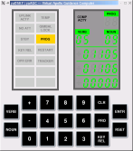 |
View the alarm codes |
Because of some current bugs
(07/19/04) in the way I initialize Colossus, there will be
some program alarms at startup, and the PROG indicator will
light to inform you of this. You can view the alarms
by keying in V05N09E at the DSKY. (In normal AGC
shorthand, 'V' is short for "VERB", 'N' is short for "NOUN",
and 'E' is short for "ENTR". So "V05N09E" means to hit
the keys VERB 0 5 NOUN 0 9 ENTR.) Program alarms 1105 and 1106 happen to be "downlink too fast" and "uplink too fast". Uplinks or downlinks refer to exchange of telemetry information with ground equipment. |
| 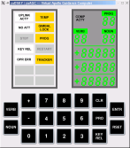 | DSKY lamp test | At the DSKY, key in
V35E. This will light up all of the DSKY annunciators,
flash the VERB/NOUN labels, and display 88 or +88888 in all
of the numerical registers. After about 5 seconds, the
test stops—you can tell, because the flashing stops, though
the numbers remain—and you can continue. When the accompanying screenshot was taken, I didn't yet know how the AGC controls the DSKY's STBY and RESTART indicators, so those weren't turned on by the test. Because of a bug in the simulator (as of 07/19/04), the PROG indicator doesn't re-light after the lamp-test completes. Therefore, you may or may not see the PROG indicator lit if you try the sample operations below. |
| Display memory-bank checksums | The core-rope (read-only)
memory is divided into 36 banks, numbered 00-43
(octal). A so-called "bugger word" has been stuck at
the end of each bank—no comments on this terminology,
please, since I didn't invent it; when I asked Don Eyles
some question that involved them, he somewhat-laconically
stated "we called them check sums"—which causes the checksum
of the bank to come out to a known value. This known
value is the same as the bank number when possible, and is
the logical complement of the bank number otherwise.
(For example, the checksum of Colossus bank 00007 is 00007, but the
checksum of bank 00006 is 77771. Both are
correct.) Colossus's
"show-banksum"
program can be used to display the bank numbers, one by
one. You can execute the show-banksum program by
keying in V91E on the DSKY. After a few seconds, the
statistics for bank 00 will be shown: R1 (the topmost
5-digit display) will contain the computed checksum; R2 will
contain the bank number; and R3 will contain the bugger
word. Each of the displays will be in octal, as
indicated by the fact that the +/- sign is blank. To
advance to the next bank, key in V33E. (Hitting the
PRO key does the same thing.) If you have the patience
to advance through each of the banks, the next V33E (or PRO)
after bank 43 will wrap-around to bank 00 again. To
terminate the show-banksum program, you can key in V34E. By the way, the bank-6 bugger word shown (05143) is for Colossus 249. If you ran the Artemis 072 program, it would have been 04275, while if you ran the Luminary 131 program, it would have been 63402. |
|
| Monitor the current time | If you key in V16N36E or
V16N65E, it will cause the current time to be
displayed. (Since we haven't set the time in any way,
this will be the time since AGC power-up). R1 (the
topmost 5-digit display) will be in hours, R2 will be in
minutes, and R3 will be in 100ths of a second. This
display is updated once per second. In the accompanying screenshot, the time is 06:58:33.86. |
|
| Setting the current time | If it annoys you to see the
time since power-up, you can change the time (for example,
to mission time) by keying in V25N36E. R1 will go
blank, enabling you to key in the current hour. Make
sure you start with a + sign (this is how the AGC knows
you're using decimal rather than octal), and make sure you
enter all five digits (including the leading zeroes).
In case you make a mistake, you can clear R1 any time before
pressing ENTR by using the CLR key. After you hit the
ENTR key, R2 will clear and you can enter the current
minutes. Finally, you can key in the number of seconds
in R3. Don't forget that the number of seconds is
actually in 100ths of seconds, so that if (for example) you
want 30 seconds you'd key in +03000E. In the accompanying screenshot, it just happened to be 06:55:25 am., so that's how I set the clock. |
|
 |
Examining the contents of the core-rope | Key in V27N02E. This
allows you to enter the address of a word in the core-rope
into R3. This address will generally be in octal, and
therefore should not be preceded by a + sign. Also,
unlike entry of decimal data, in octal you can enter just as
many digits as you need, and don't need to enter a full five
digits. The addresses will be 00000-01777 for memory
bank 00, 02000-03777 for memory bank 01, and so forth, up to
76000-77777 for memory bank 37. (I'm not sure how to
examine banks 40-43.) The binary listing of the core
rope is at the very back of the Colossus 249 assembly
listing, which can be downloaded from MIT if you have some
spare time and disk space. (See my Document Library page.) In the accompanying screenshot, we see that address 4000 (octal) of Luminary's core-rope contains the value 00004. This just happens to be the first instruction executed after power-up. It is an INHINT instruction, and disables interrupts. The contents of R2 (the middle 5-digit register) are not cleared, and thus are just whatever lingers from before. |
| 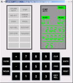 |
Examining the contents of erasable memory | Key in V01N02E. This
allows you to enter the address of a word in erasable memory
into R3. The addresses will be 00000-00377 for
erasable bank E0, 00400-00777 for memory bank E1, and so
forth, up to 03400-03777 for memory bank E7.
Alternately, you can "monitor" a memory location (i.e., get
updates for it once per second) by using VERB 11 rather than
VERB 01. For example, V11N02E25E will monitor register
25, the "TIME1" register, which is an internal counter that
increments every 10 ms. In general, of course, the
numbers won't mean much unless you reference them to the
Colossus 249 assembly listing. In the accompanying screenshot, we actually do look at the TIME1 register, and discover that at that instant it contained the value 20245 (octal). Of course, you'll see something different. Display R2 is not changed, so it just contains whatever it contained before. |
| Altering the contents of erasable memory | Key in V21N02E, and enter an
octal address as above, and then enter a new value to be
stored at that address. It goes without saying that
you need to know what you're doing when you do this! In the accompanying screenshot, I've chosen to reload the TIME1 register with the value 12345 (octal), which probably won't cause too many adverse effects. Display R2 is not changed, so it just contains whatever it contained before. |
|
| 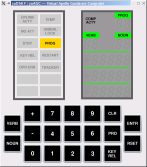 |
Fresh start | Key in V36E. This
apparently restarts the "pinball" program—i.e., the program
that is responsible for accepting verbs and nouns and
displaying stuff on the DSKY—and it's useful for clearing
garbage from the DSKY's display, as the accompanying
screenshot demonstrates. In the accompanying screenshot, a side-effect of the fresh start is the thoughtful re-display of the PROG (program alarm) which the earlier DSKY lamp-test had wiped out. |
| (Your
picture here.) |
Do-it-yourself research | The file
yaAGC/Colossus249/ASSEMBLY_AND_OPERATION_INFORMATION.s lists
the verb and noun tables, so perhaps you can figure out some
neat stuff yourself. If you do, let me know and I'll
add it to this list. |
| Step 0 |
Run the simulator |
Run VirtualAGC as described above, select "Apollo 13 Lunar Module" in the "Simulation Type" area, and hit "Run!" | |
| Step 1 |
V35E |
Starts the DSKY lamp
test. All of the indicator lamps are lit, the
numerical displays show 88 or +888888 as appropriate, and
things which are supposed to flash, flash. After about
5 seconds, the lamp test automatically terminates. |
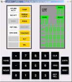 |
| Step 2 |
V37E 00E |
"Goto Pooh" — i.e., start
program P00, the idling program. The numeric area
under the PROG label will show 00. |
|
| Step 3 |
V25E N01E 01365E 0E 0E 0E |
Set the count of total failed
self-tests, total started self-tests, and
successfully-completed division tests to 0. |
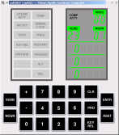 |
| Step 4 |
V15 N01E 01365E |
Begin monitoring the
self-test counts. R1 (the top 5-digit display) shows
the number of failed tests, R2 shows the number of started
tests, and R3 the number of completed division tests.
Each should be +00000 ("all balls"). |
|
| Step 5 |
V21 N27E 10E |
Begin background
self-tests. These tests will continue until the
astronaut (you!) terminates them. Continue at least
until the number of started tests (R2) reaches 3. |
|
| Step 6 |
V21 N27E 0E |
Terminate the background
self-tests. |
(Looks the same, of course.) |
| ... |
(more later) |
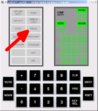One nice thing about open-source software (which
our Virtual AGC Project is!) is that other people are free to
incorporate the software within their own projects, and thus it
can see a more-rapid diffusion into a wider sphere of usage than
would have been possible if (say) it was just me developing it by
myself. In the case of Virtual AGC, one thing that has been
done with it is that it has been incorporated into the Orbiter Space Flight
Simulator system, via the Project
Apollo NASSP add-on, which people then use to fly very
realistic or imagined Apollo missions. The NASSP folks have
been kind enough to incorporate the capability of logging
interactions between the simulated AGC and simulated DSKY, with
the result that we can "play back" (though not interact with) such
realistic logged activity on the simulated DSKY.
This capability is only available in Virtual AGC software
versions 2017-12-11 and later, and it works as follows: if
you left-click on the PROG lamp indicator with the mouse, a
file-dialog will open up. Of course, in the real
DSKY, PROG was not a button; it was merely a lamp. But we've
assigned it this additional function in our simulated DSKY.
In the file-dialog, select the pre-recorded script
Apollo8-launch.canned
As you may imagine, this is a recorded Apollo 8 launch sequence,
which takes about 15 minutes to play back. You'll see
various things in watching it:
If you get tired in the middle of all this and don't want to
watch it all the way to the end, just click PROG again to
terminate the script.
| CLR 4 1 2 READOUT |
View the results of the
self-test, which are stored in the AGS CPU at (octal)
location 412. A code of +10000 means the test has
passed. Oops! the test has failed. That's because the self-test is pretty thorough; it tests not only memory checksums, but also the operation of various CPU instructions. The possible error codes here are: +000000 Test still
in progress
+100000 Test passed +300000 Logic test failure +400000 Memory test failure +700000 Logic and memory test failure I was having a little problem with the instruction set when this screenshot was taken, thus the self-test failed. Fortunately, the AGS flight programs have been written to continue operating in the case of self-test failure, even though it is "not recommended". The current version of yaAGS actually does pass the self-test, and so you'll see a code of +100000 here. |
|
| 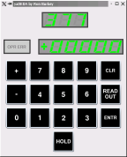 |
CLR 3 7 7 + 0 0 0 0 0 ENTR |
Set the clock to 0. The
CPU uses address 377 (octal) as a counter that increments at
6-second intervals. Before using it, though, we want
to set it to a known value. In real life, the AGS time would be initialized by synchronizing with the AGC electronically. However, I'm not quite yet ready with that particular feature. |
| 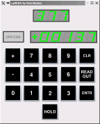 |
CLR 3 7 7 READOUT |
Watch the clock
incrementing. Although the counter changes at 6-second
intervals, and counts in units of 6 seconds, the CPU
actually updates the DEDA display every 1/2 second. |
The
operations listed above are very representative from the
user-interface perspective of all the other kinds of
operations you can perform on the DEDA. There are
basically two classes of DEDA-based operations:
|
||
| Jonathan D. Addelston, A.
Peter Adler, Rama M. Aiyawar, Ramón
Alonso, R. R. Bairnsfather, Ruth Birtwell, Hugh
Blair-Smith, Norm Brodeur, George W. Cherry, Edgar M.
Oshika, Ed Copps, Steve Copps, Bob Covelli, J. D. Coyne,
Danforth, Dana Densmore, DeWitt, Bart DeWolf, Stan Eliassen,
Al Engle, Don Eyles, Fagin, Filene, Naomi Fisher, Jim
Flanders, Follett, Gauntt, Richard D. Goss, John Green, Margaret
Hamilton (see also Hamilton
Technologies,
Inc.), R. Hirschkop, Mike Houston, Eileen T. Hughes,
Lowell G. Hull, T. James, G. Kalan, Don Keene, James E.
Kernan, Kilroy, Allan Klumpp, Tom Knatt, Alex Kosmala,
Krause, Dan Lickly, Lonske, Lu, Fred W. Martin, R. "Mel"
Melanson, Jim Miller, John Miller, Ray Morth, N. M. Neville,
Henry J. Noble, North, Olsson, Rhode, Robertson, S.
Rudnicki, Phyllis Rye, Jay A. Sampson, Joe Saponaro, Robert
Schlundt, George Schmidt, Schulenberg, P. Shakir, Smith, Robert F.
Stengel, Gilbert Stubbs, Sturlaugson, Richard Talayco,
W. H. Vandever, Ken Vincent, Peter Volante, P. S. Weissman,
P. White, Bill Widnall, Ron Wiggins, Willman, Craig Work,
Saydean Zeldin. |
| 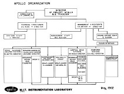 May 1962
|
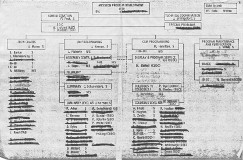 September 1968, Group 23B only
|
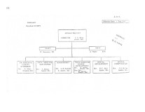 February 1969 (18 pages)
|
February 1972 (18 pages)
|
|
Apollo 15-17
CM Honor Roll
|
|
Apollo 11
Honor Roll
Organizational honors
Individual honors
|
|
Apollo 6 Honor
Roll
Organizational honors
Individual honors
|
|
AURORA and
Apollo 5 Honor Roll
Organizational honors
Individual honors
|
|
RETREAD 50 Honor
Roll
Organizational honors
Individual honors
|
| The procedure developed to work around the
erroneous abort signal on Apollo 14 was as follows: (1) After the NOUN 62 countdown starts (an automatic display of the countdown toward engine ignition), but before ignition, key in VERB 21 NOUN 1 ENTER 1010
ENTER
107 ENTER to set the mode register to 71 to indicate that an abort had already occurred. Note that the numbers are in "octal" (i.e. based on the root of 8 not 10) so that the number "107" actually means "71". (2) Exactly 26 seconds after ignition, manually advance the descent engine throttle to 100%. (3) Key in VERB 25 NOUN 7 ENTER 101
ENTER
200 ENTER 1 ENTER to enable the landing guidance equations. The equations were prevented from starting automatically because the mode register is set to the phony value of 71. (4) Key in VERB 25 NOUN 7 ENTER 105
ENTER
400 ENTER 0 ENTER to explicitly disable the abort monitor. This clears the FLAGWORD bit that controls the abort monitor. (5) Key in VERB 21 NOUN 1 ENTER 1010
ENTER
77 ENTER to set the mode register to its proper value of 63. (6) Return the manual throttle to its minimum setting. The throttle stays at 100% because it is now being commanded by the guidance equations. But if this step were omitted the throttle would be forced to stay at 100% when the guidance equations later request partial thrust, with bad effects. |


{kind=link}
{kind=link}
{kind=link}
{kind=link}
{kind=link}
{kind=link}
{kind=link}
{kind=link}
{kind=link}
{kind=link}
{kind=link}
{kind=link}
{kind=link}
{kind=link}
{kind=link}
{kind=link}
{kind=link}
{kind=link}
{kind=link}